O prólogo começa com uma mensagem que diz "É agora, Madeline. Respira. Por que está tão nervosa?", em seguida ganhamos controle de Madeline, que começa a passar por um terreno acidentado, onde ela tem que pular e escalar para avançar. Após passar pelo terreno, com um bloco de gelo quase caindo em cima dela, Madeline chega a uma casa, onde ela encontra uma senhora idosa, e pergunta pra ela se aquela trilha levava á montanha Celeste, a senhora diz que sim, que ela está quase na montanha e só precisa passar por uma ponte. Madeline um pouco antes de passar pela casa, pede para a senhora ligar para alguém que possa arrumar a entrada, porque a passagem havia caído e ela quase tinha morrido, a senhora começa a rir e fala que se a passagem quase a engoliu, talvez a montanha fosse demais para Madeline. Madeline se ira com a senhora, e a senhora diz á Madeline que ela pode subir a montanha á vontade, mas que essa montanha é um lugar estranho e ela talvez veja coisas que ela não está pronta para ver. Madeline manda a senhora se tratar, a senhora começa a rir e o dialogo acaba, Madeline começa a passar pela ponte, que começa a desmoronar, e chegando no final da ponte, o chão debaixo dela cai, porém nesse momento que parece que tudo está acabado, o jogo nos ensina a dar dash's e Madeline continua sua jornada. O final do prólogo nos tráz apenas uma mensagem "Você consegue"
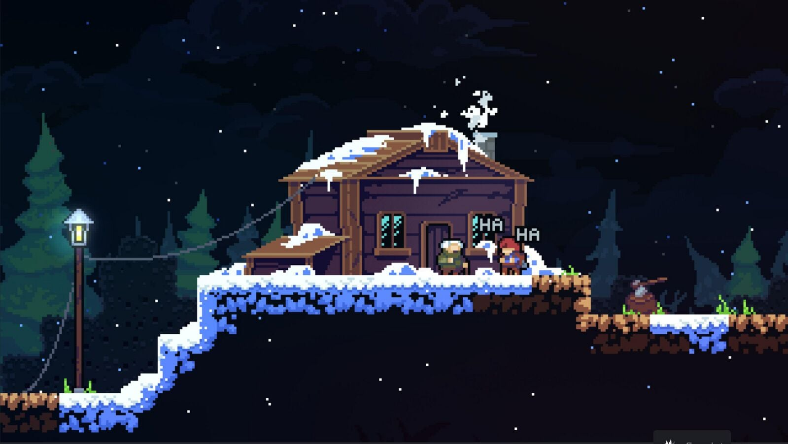
Cabana da senhora
Capítulo 1 - Cidade Abandonada
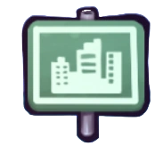
O capítulo 1 começa com Madeline chegando a uma cidade abandonada, e ao explorar a cidade, ela encontra um jovem fotógrafo chamado Theo, que se apresenta como um aventureiro de um terra distante, Seattle, e diz fica feliz de encontrar mais uma pessoa naquele lugar solitário, eles começam a conversar e acabam revelando seus objetivos naquela montanha, Madeline diz que quer chegar ao cume da montanha, e Theo diz que foi ali para tirar fotos, Madeline aposta que Theo conseguiria chegar ao tobo também, mas Theo diz que não se importa de chegar ao cume, mas ele diz que quer muito chegar em uma ruinas reais de 1800 que tem na montanha. após essa interação, Madeline continua sua escalada sozinha.
No final do capítulo, Madeline encontra um memorial dedicado àqueles que pereceram na escalada, e ao lado do memorial, uma fogueira, onde ela se senta para descansar, um passaro pousa em sua cabeça e ela diz que aquilo era um erro.
Aparencia padrão da Cidade Abandonada
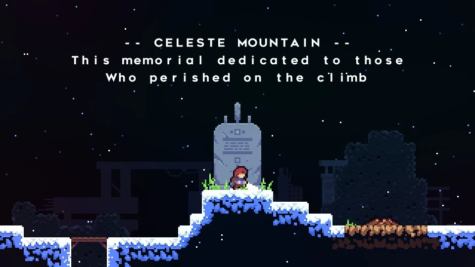
Memorial
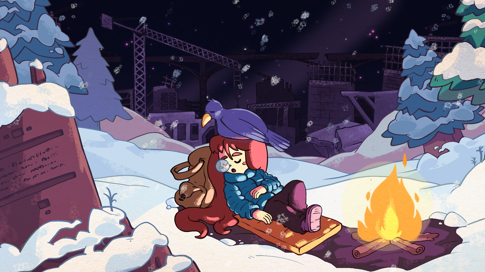
Tela de conclusão do capítulo
Capítulo 2 - Terreno Antigo
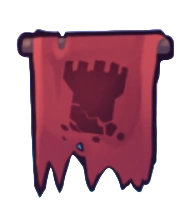
O capítulo 2 começa com Madeline acordando do lado da fogueira, suas chamas mudaram de laranjas para verdes, o memorial perto dela está com as letras embaralhadas e o céu está com uma aspecto estranho, como se fosse uma chuva de estrelas. Madeline decide seguir em frente e encontra umas ruínas, mas elas parecem desfiar as leis da física, com algumas pedras flutuando.
Se aprofundando nessas ruínas, ela encontra um espelho, porém, a imagem refletida não é dela, parece ser uma versão distorcida, com olhos vermelhos, e com roupas e cabelos roxos, depois de olhar para essa sua versão estranha, a reflexão se move sozinha, quebra o espelho e sai correndo, com isso algumas paredes do local parecem serem feitas de uma massa negra com estrelas dentro. Madeline tenta dar um dash através dessa parede e descobre que consegue atravessar ela.
Madeline continua explorando e eventualmente encontra sua reflexão estranha, e a mesma se apresenta como uma parte de Madeline, Madeline questiona o porque de uma parte dela ter uma aparencia tão sinistra, a reflexão se ofende de ter sido chamada de sinistra, mas fala que está preocupada com elas, e que elas precisam de um hobby, Madeline diz pode até ser loucura, mas que ela realmente tem que escalar essa montanha, a reflexão diz que Madeline é muitas coisas, porém alpinista definitivamente não é uma dessas coisas, ela também diz que escalar não é o ponto forte de Madeline, que ela não sabe onde está se metendo e que ela não vai aguentar, Madeline rebate dizendo que é exatamente por isso que ela tem que fazer isso, e pergunta com deboche se aquela é a parte fraca ou preguiçosa dela, a reflexão responde que é a parte pragmática, mas que ainda está tentando ser diplomática e chama Madeline para irem para casa juntas, com isso, Madeline começa a correr, e sua reflexão começa a seguir
A medida que a perseguição vai ficando mais frenética a tal reflexão vai se multiplicando, saindo de apenas uma cópia, para três cópias, até que chegam cinco cópias para seguir Madeline, até que parece que Madeline consegue despistar as cópias, ela chega em um telefone, e logo que ela chega perto, ele começa a tocar, ela atende e a voz do outro lado pergunta o porque de Madeline estar ligando de um orelhão, ela começa a dizer que não foi ela que iniciou a ligação, mas desiste e começa a falar que tinha alguém a perseguindo, a voz do telefone diz que ela sempre faz isso, inventa histórias no meio da noite e começa a ligar para ele, Madeline se ira e diz que ela não está inventando, a voz pede para sua namorada se acalmar e falar o que aconteceu, Madeline então se acalma e começa a contar, mas no meio de sua explicação ela para, realiza que está sonhando e a voz responde que era claro que ela estava sonhando, pois eles não se falavam a meses, e a voz questiona o porque eles voltariam a se falar agora, Madeline começa a se irritar e perguntar por que ela está escalando a montanha, e com isso a reflexão pragmática aparece que diz que se pergunta a mesma coisa, diz também que é hora de desistir e voltar para casa, logo após, a reflexão some, o poste de telefone que ela estava usando se transforma num monstro e engole ela.
Com tudo isso, Madeline acorda do lado da fogueira que ela havia se sentado anteriormente, e começa a explorar de verdade as ruínas que tinha visto em seu sonho, após andar um pouco, ela reencontra Theo que diz que a escalada foi dura, mas que valeu a pena, e que rendeu várias fotos, ele pergunta se ela quer ver as fotos e ela diz que sim, após ver as fotos, Madeline diz que ficaram incríveis, Theo expressa seu desejo de que essas fotos façam ele chegar em mil seguidores em seu InstaPix @theounderstars, ele diz que eles tem que comemorar formalmente aquele acontecimento, e sugere que eles tirem uma selfie, Madeline acha que não é uma boa ideia, Theo ignora e tira a selfie mesmo assim. Madeline pergunta o motivo de Theo começar a aprender fotografia, ele diz que seu avô gostava muito e até era semi-famoso no mundo da fotografia, ele fala que não sabe se um dia será tão bom quanto seu avô, mas que é bom se sentir perto dele.
No final do capítulo, Madeline chega no mesmo telefone do final de seu sonho e liga para sua mãe e revela que a escalada em si não tem nada correndo mal, mas ela está confusa, sua mãe então diz para ela lembrar de respirar no caso de um ataque de pânico.
Observação: Essa reflexão não tem nome definido no jogo, porém tanto nos arquivos, quanto no tradding card da Steam, ela é chamada de "Badeline", então, daqui em diante ela só será referida dessa forma
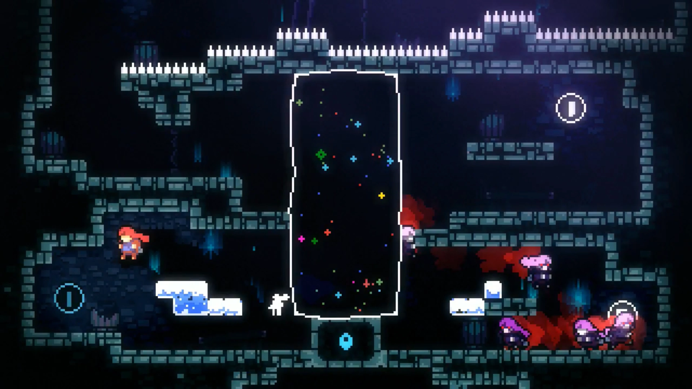
Aparencia padrão do Terreno Antigo
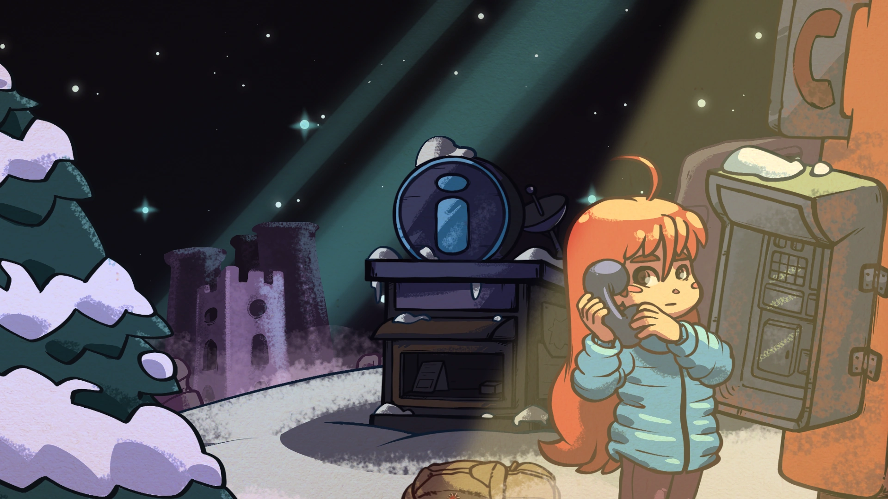
Tela de conclusão do capítulo
Capítulo 3 - Resort Celestial
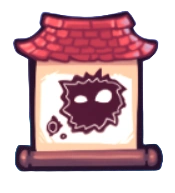
No capítulo 3, Madeline continua sua escalada e acaba avistando um hotel, o caminho até lá está tão acidentado quanto o caminho até a casa daquela senhora esquisita, mas em vez de ter um bloco de gelo prestes a cair em sua cabeça, agora tem bolas de poeira preta e vermelha. Prosseguindo até a entrada, ela percebe que a porta está trancada, mas que a chave está em um lugar não muito alto. Ela escala, pega a chave, destranca a porta e chega no saguão, onde ela encontra o balcão de recepção, onde ao mexer nos papeis que estavam ali em cima, um ser, parecido com humano, se manifesta e recepciona Madeline, ela se assusta é pergunta se ele é um fantasma, ele pede para ela não ser boba, ele é o concierge daquele belo estabelecimento, e dá as boas vindas ao renomado HOTEL RESORT CELESTIAL.
Esse concierge se apresenta como Sr. Oshiro, e diz que está a seu dispor, Madeline percebe que após se apresentar, ele começa a falar sozinho, sussurando, que os negócios finalmente estão decolando, já que chegaram dois hospedes no mesmo dia. Ignorando completamente esse fato, Sr. Oshiro pergunta quanto tempo será a estadia de Madeline, que responde que só está de passagem, e lhe pergunta se tem uma saída pelos fundos. Sr. Oshiro sussura para si mesmo que daquele jeito não dá, Madeline percebe que ele não se deu conta ainda que ela pode ouvir seus sussurros, ele decide voltar ao assunto e diz que a saída dos fundos é só para funcionários e começa a oferecer a suíte presidencial para ela, dizendo que é muito confortável, ela decide ie até a suíte para acessar o teto e continuar a sua escalada, Sr. Oshiro pede para Madeline o seguir, e Madeline segue, mas num ritmo muito mais lento.
Chega um ponto em que Oshiro pede para ela acelerar e acompanhar seu ritmo, já que ele é encarregado de um estabelecimento de alto nível, ele não pode ficar demorando muito com apenas um hospede, Madeline diz que ele não tem que ficar a esperando, já que ela só está de passagem, Oshiro pede desculpas e fala que ela pode explorar o quanto quiser.
Explorando um pouco, Madeline chega em uma sala que está tão bagunçada, que se tornou um labirínto, Oshiro começa a entrar em pânico e diz que nunca vai conseguir arrumar aquela bagunça toda sozinho, Madeline se prontifica para ajudar na faxina. No meio da arrumação ela descobre uma carta geral do Sr. Oshiro dizendo que o hotel teria que fechar, e também acha Theo, os dois concordam que Oshiro tem problemas, mas, enquanto Theo quer só sair de daquele lugar o mais rápido possível, Madeline fala que quer ajudar ele, Theo diz que ela é muito gentil, mas que eles não conseguem ajuadar o anfitrião, Madeline insiste que ela consegue fazer o Sr. Oshiro entende-la e pede que Theo vá na frente, quanto mais Madeline arruma a bagunça, mais ansioso Oshiro fica, porque acha que ele está perdendo sua hospede.
Ao finalmente acabar a arrumação, Sr. Oshiro finalmente leva Madeline a tal suíte, ao tentar pegar o elevador, Madeline percebe que ele não funciona e sobe por escalar pela parte de fora do elevador, ao chegar no topo, ela encontra Theo, que diz que o sistema de ar daquele lugar é um labirinto e tenta convencer Madeline de sair desse hotel, porque o Sr. Oshiro vai enlouquecer uma hora ou outra, Madeline não dá ouvidos e diz que vai ficar tudo bem.
Seguindo um pouco mais a diante, Madeline começa a ver Oshiro enlouquecendo, e ela vê que quanto mais ele perde o controle, mais daquelas bolas de poeira preta e vermelha do inicio do caminho e de dentro do hotel saem dele, isso explica o porque de terem tantas no meio do hotel. Ao dar uma volta para evitar essa poeira, ela acha o diário de Oshiro, onde a última entrada é de décadas atrás, dizendo que o hotel tinha oficialmente fechado, e que a equipe do hotel tinha se organizado para escalar a montanha, dado que pouquissimos deles haviam visto o topo, mas o diário diz que Oshiro, decidiu passar uma última noite no hotel, para se despedir.
Terminando a volta, Madeline chega na suíte e encontra Oshiro, enquanto eles conversam, do espelho do quarto, surge Badeline, que começa a insultar Oshiro e seu hotel, Madeline até tenta apaziguar a situação, mas Oshiro se irrita e pede para ela sair, então Badeline abre um buraco no teto, enquanto Madeline sobe ao telhado, é possível escutar Oshiro tentando se convencer que Badeline está mentindo, mas não funcionando direito
Ao chegar no telhado, Madeline e Badeline começam a discutir, mas logo após, Oshiro também chega e pergunta a Madeline o motivo de ela ter sido tão gentil e depois ter fugido, Madeline diz que só queria ajudar, mas Badeline chama os dois de patéticos e some, com isso, Oshiro fica furioso se transforma e começa a perseguir Madeline, até chegarem no final do telhado, que Sr. Oshiro quebra, derrubando os dois, e fazendo ele voltar à sua forma padrão. Depois de cairem, Sr. Oshiro diz que fechou o hotel para reparos e que Madeline deve o deixar em paz, após isso ele volta para dentro do hotel e Madeline segue seu caminho
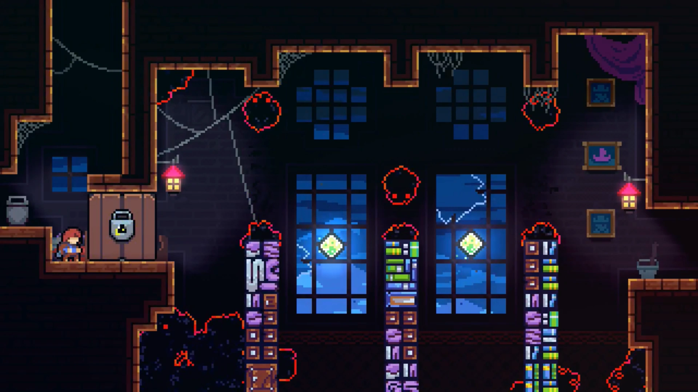
Aparencia padrão do Resort Celestial
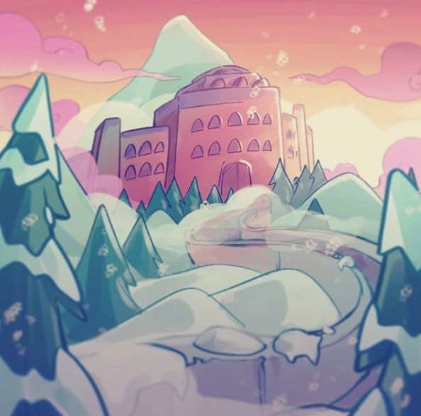
Foto que Theo tirou antes de chegar no Resort
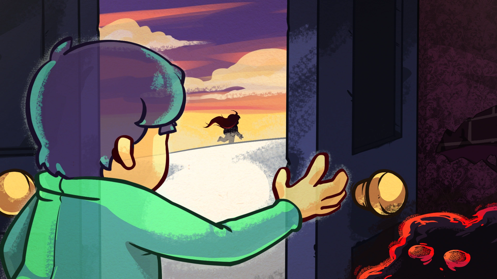
Tela de conclusão do capítulo
Capítulo 4 - Cordilheira Dourada
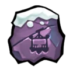
Madeline continua escalando e chega em uma parte da montanha com alguns corpos d'água, e ali ela encontra a senhora estranha do inicio. A senhora diz que está feliz de encontrar Madeline novamente, e inteira ainda por cima, ela pergunta também se Madeline conheceu o Sr. Oshiro, e ela responde com desprezo que sim e que foi expulsa depois de ter limpado muitas coisas de lá, a senhora explica que Oshiro é uma alma perdida, e que não dá pra consertar ele, Madeline fala que acha que a montanha deixou os dois malucos, a senhora diz que já escutou isso, e que talvez ela esteja certa, mas que, em sua percepção, a montanha não consegue extrair nada que já não esteja dentro da pessoa, só que, para morar na montanha, uma pessoa só pode ter uns parafusos soltos, parando de divagar, a senhora então pergunta se Madeline já está pronta para desistitir, porque, se ela quiser, existe um atalho para a base da montanha, Madeline fala que não vai descer, e que vai até o topo, a senhora começa a rir e diz que Madeline é igual a ela quando era mais nova, Madeline pergunta o motivo dela morar na montanha, a senhora responde que a montanha mostra quem a pessoa é de verdade. Madeline então decide continuar sua escalada
Chegando no final da cordilheira, Madeline encontra um teleférico que levava para cima, prestes a embarcar, ela escuta uma voz familiar a chamando e pedindo que espere, olhando para a direção da voz, ela vê Theo pulando de um lugar alto e se esborrachando no chão. Após Theo embarcar, ele decide puxar a alavanca que estava no meio do teleférico, o fazendo funcionar, enquanto sobem, Madeline questiona se aquilo é seguro Theo diz que tudo está tranquilo e pergunta como foram as coisas com Oshiro, Madeline diz que não correu bem, e que ela devia ter escutado ele.
Depois de um tempo, eles decidem tirar uma selfie, mas quando eles vão tirar a foto, o teleférico balança de forma repentina e Badeline aparece no telhado. Com essa balançada, o teleférico para, Theo tenta fazer a mesma coisa que fez para funcionar pela primeira vez, mas a alavanca acaba saindo do lugar e caindo pela montanha. Com isso, Madeline começa a entrar em desespero e ter um ataque de pânico, isso e o fato do ar ser mais rarefeito alí, torna a respiração dela muito mais difícil. Theo percebe o ataque de pânico da amiga e pergunta se ela está bem, ela responde que não, e pergunta o motivo dele ter achado que andar de teleférico era uma ideia boa, Theo ignora esse ataque a ele e ensina uma técnica de seu avô para casos de ataque de pânico, que consiste em fechar os olhos, imaginar uma pena e controla-la com a respiração, com o objetivo de a fazer subir e descer de forma lenta e contínua.
Ao chegar no final do teleférico, Madeline sai correndo para a terra firme. Theo pergunta se ela está, e a resposta é que ela está melhor, mas Madeline questiona como ele sabia que voltariam a andar, Theo responde que achava que eles estavam mortos
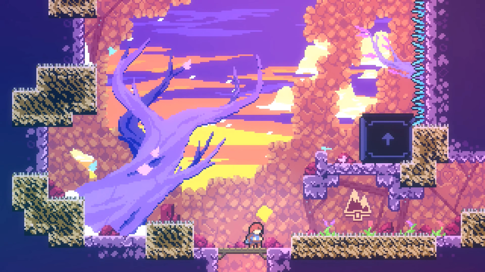
Aparencia padrão da Cordilheira Dourada
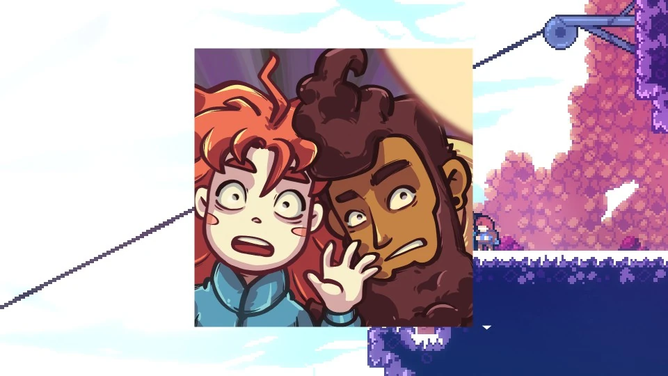
Selfie de Theo e Madeline
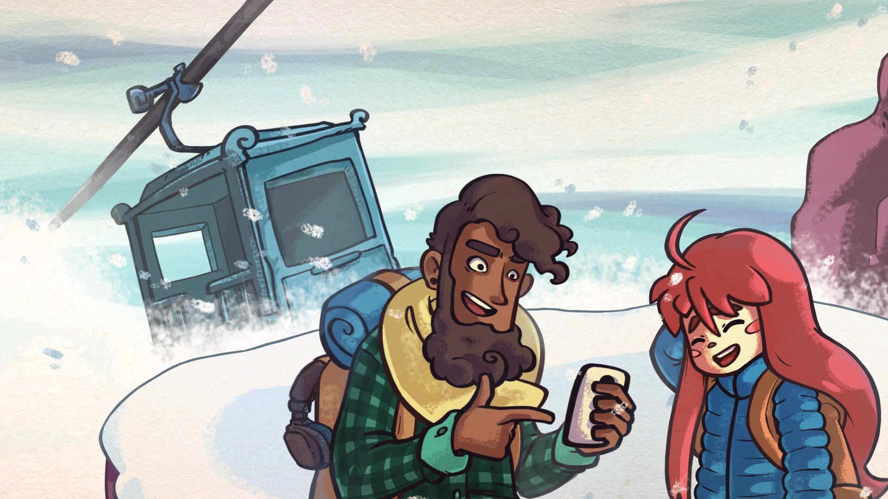
Tela de conclusão do capítulo
Capítulo 5 - Templo do Espelho
Madeline e Theo chegam em um templo cheio de espelhos, Theo acha muito interessante e fala que vai entrar para tirar fotos, Madeline diz que aquilo não parece tanto uma aventura, mas sim um pesadelo e pede para Theo esperar, ele não espera e vai na frente, Madeline diz que aquilo não vai acabar bem, e depois entra.
Depois de explorar um pouco, Madeline acha um espelho com apenas a reflexão de Theo, ele diz que foi tirar uma selfie e, quando ele percebeu, estava em um lugar escuro, ele que tem alguma coisa vindo, pede para Madeline ter cuidado e vai embora.
Após explorar bastante, Madeline chega em uma sala que tem um espelho gigante, ela acende duas tochas verdes, ela encara o espelho por um tempo, até que percebe que ele se tornou um portal e está a puxando, a menina tenta fugir mas não consegue, e acaba sonhando que está no corpo de um monstro, e ele vai até o corpo inerte dela e o come, Madeline então acorda em uma plataforma e pula dela, ao aterrissar, ela encontra Badeline e a confronta, perguntando onde elas estão e o que ela fez com Theo, Badeline pergunta se Madeline realmente acha que ela está fazendo isso, ela diz que foi sobre isso que ela alertou antes, ela explica que foi a montanha que deu aquele corpo para ela, e que ela não é única coisa sinistra vivendo na cabeça de Madeline, ela explica que o templo só amplifica o poder da montanha, aquilo acontecendo, é fruto do ser de Madeline, e é ela que está no controle, não Badeline, Madeline então pede ajuda para sair dali, mas Badeline nega, dizendo que ela merece isso, e vai embora, Madeline decide que vai escalar a montanha sozinha.
Chega uma hora em que Madeline se pergunta o motivo de tudo ser tão hostil, mesmo sendo tudo da cabeça dela,ela começou a se desesperar, pois Theo está preso em algum lugar por culpa dela, então uma reflexão normal lembra ela de respirar e da técnica que Theo ensinou, e assegura que Madeline conseguirá salvar ele.
Tendo procurado muito, ela vê Theo através de uma parede de espinhos e ele está preso dentro de um cristal, Theo diz que está feliz de vê-la, e que parece que aquele lugar os conhece melhor do que eles mesmos, ela diz que está envergonhada dele ter visto aquele lado dela, principalmente porque ele agora está preso por conta dela e que ela é horrível, Theo diz que aquilo não é totalmente culpa dela, é que eles estão juntos naquela situação, ele explica que, por mais que os monstros estão vindo dela, ele sente que os muitos olhos do ambiente e o cristal que o prende, vem dele. Ele pede ajuda e Madeline fala que que vai achar um jeito de tirá-lo dali e que eles vão fugir do templo juntos, ele diz que Madeline é sua única esperança e que ele confia nela e ela espera que isso não seja um erro.
Após ser perseguida por vários monstros, Madeline finalmente encontra Theo, Madeline tenta quebrar a prisão de cristal, mas acaba só movendo ele, Theo diz que, talvez, se eles descobrirem o motivo dele estar preso ali, eles conseguiriam tirá-lo mais facilmente, ele diz que até quer saber o motivo mas quer pensar fora daquela dimensão, e como ele não consegue se mover, ele pede para Madeline carregá-lo para fora, Madeline aceita e começa a carregar Theo até o final.
Chegando no limite da dimensão, eles passam por um corredor que começa a se fechar atrás deles, e enquanto eles andam, ondas de energia vêm em sua direção, os jogando para trás, essas ondas vêm de um olho no final do corredor. Chegando no olho, Madeline arremessa o cristal contém Theo, o olho estoura e o cristal se quebra, Madeline então sai carregando Theo para fora do templo.
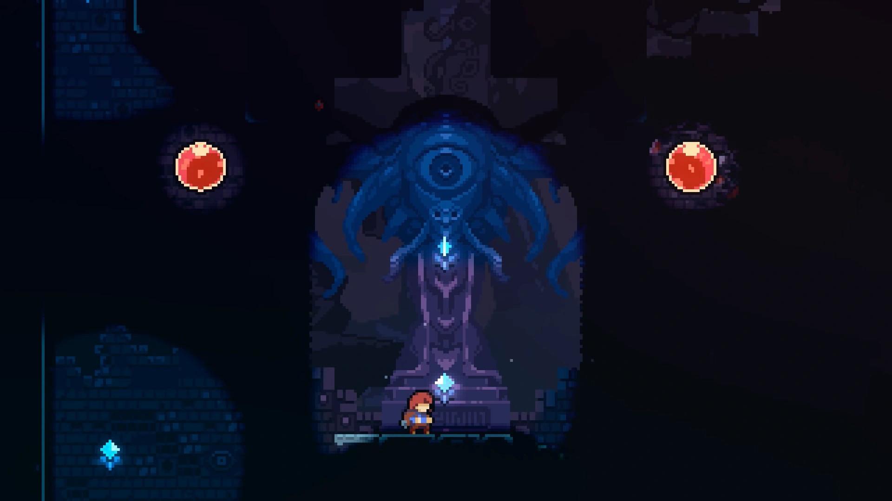
Aparencia padrão do Templo do Espelho
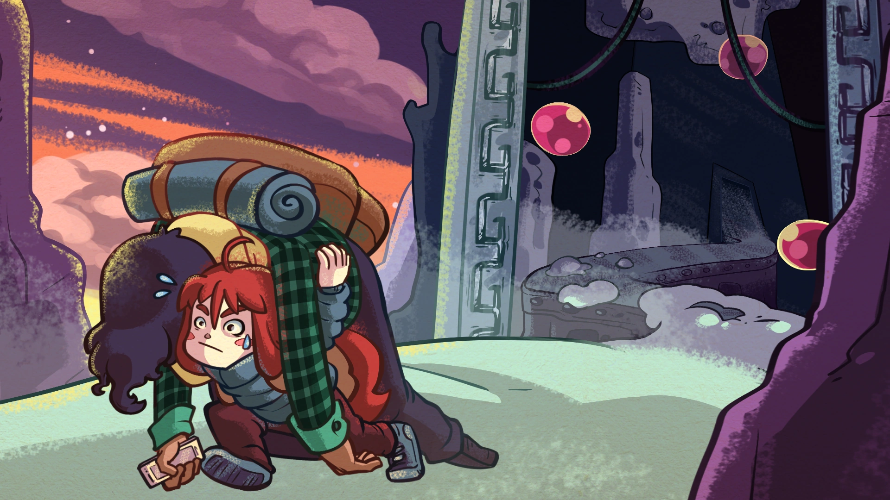
Tela de conclusão do capítulo
Capítulo 6 - Reflexão
Aparencia padrão do Templo do Espelho
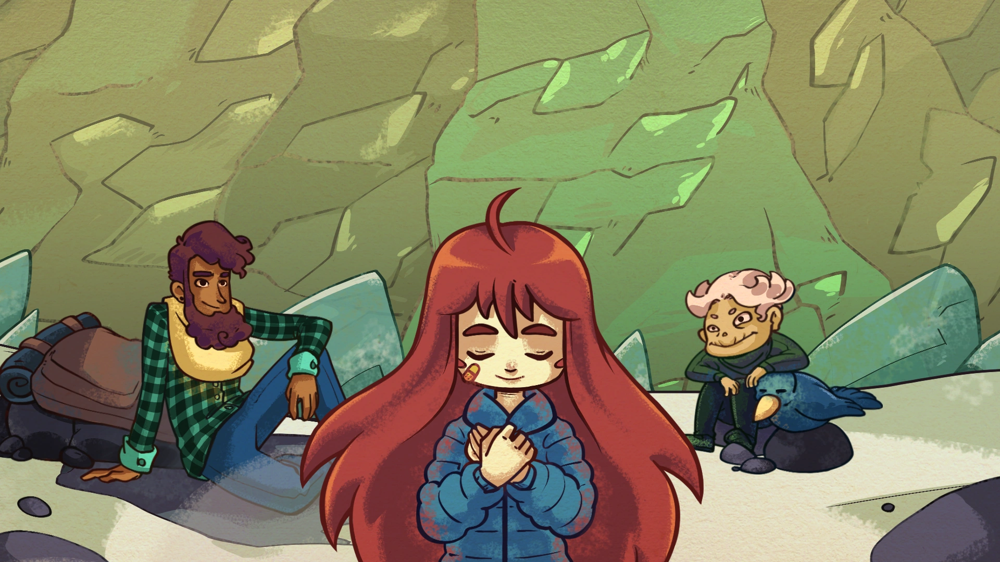
Tela de conclusão do capítulo
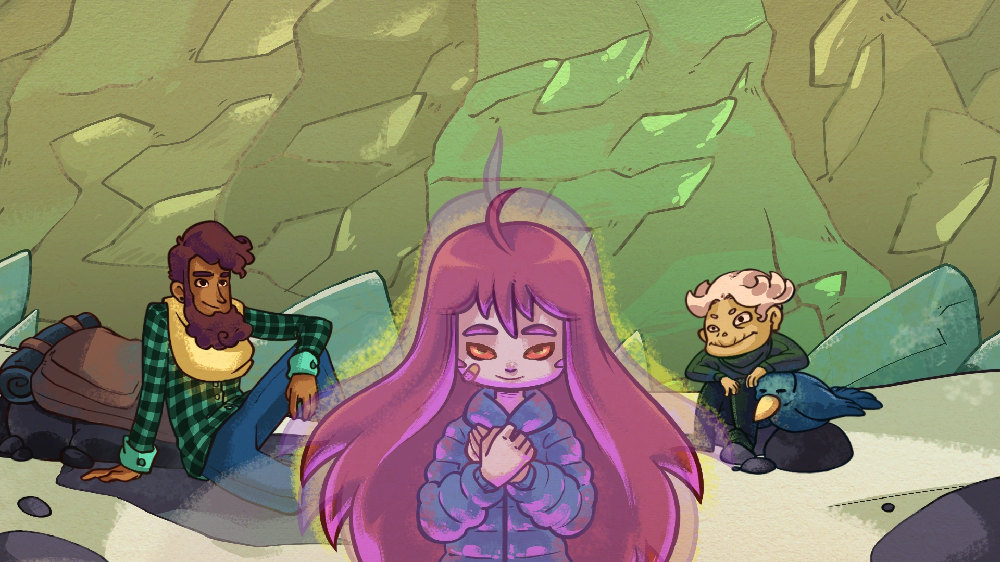
Tela alternativa de conclusão do capítulo
Capítulo 7 - O Cume
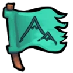
Madeline e Badeline chegam ao início do fim, elas prosseguem, e para ajudar Madeline, Badeline não apenas garante um dash adicional para Madeline, como também em alguns momentos se transforma em uma esfera que arremessa Madeline para cima, Badeline joga Madeline 500 metros para cima e elas chegam em uma seção semelhante à Cidade Abandonada. Assim elas vão prosseguindo, passando por uma pequena seção de cada capítulo anterior, seu sonho no Terreno Antigo, o Resort Celestial com suas poeiras negras e vermelhas, a Cordilheira Dourada e seus ventos, o Templo do Espelho e suas estruturas estranhas, até chegarem nas últimas partes da escalada.
Entre cada grande lançamento de Badeline, elas aproveitam para conversar, Madeline pede perdão por tentar deixar Badeline para trás, Badeline pede perdão por tentar fazer Madeline descer contra sua vontade e admite que ainda está com muito medo que algo dê errado. Elas discutem sobre o Sr. Oshiro, Madeline diz que, por mais que ele tenha feito mal à elas, ela espera que ele esteja bem. Quanto mais elas sobem Madeline questiona se vão conseguir, e Badeline assegura que elas vão conseguir subir a montanha, e que ela confia em Madeline
Chegando no topo, as duas se deslumbram com a vista, Badeline fala que quando saírem da montanha, ela não vai mais ter aquele corpo, e ela está com medo disso. Madeline a conforta, dizendo que mesmo antes daquilo tudo, ela já fazia parte de Madeline, Badeline fala que, mesmo que elas não possam mais se falar pessoalmente, ela não quer voltar a ser como era antes da experiência que tiveram na montanha, Madeline diz que também não quer, mas que quer trabalhar em conjunto com ela dali em diante. Badeline pergunta o que elas fariam agora, Madeline diz que deveriam aproveitar a vista um pouco.
Nos créditos do jogo, vemos as duas descendo a montanha, passando por partes de todos os capítulos, até que enfim elas chegam na ponte que se quebrou aos pés de Madeline
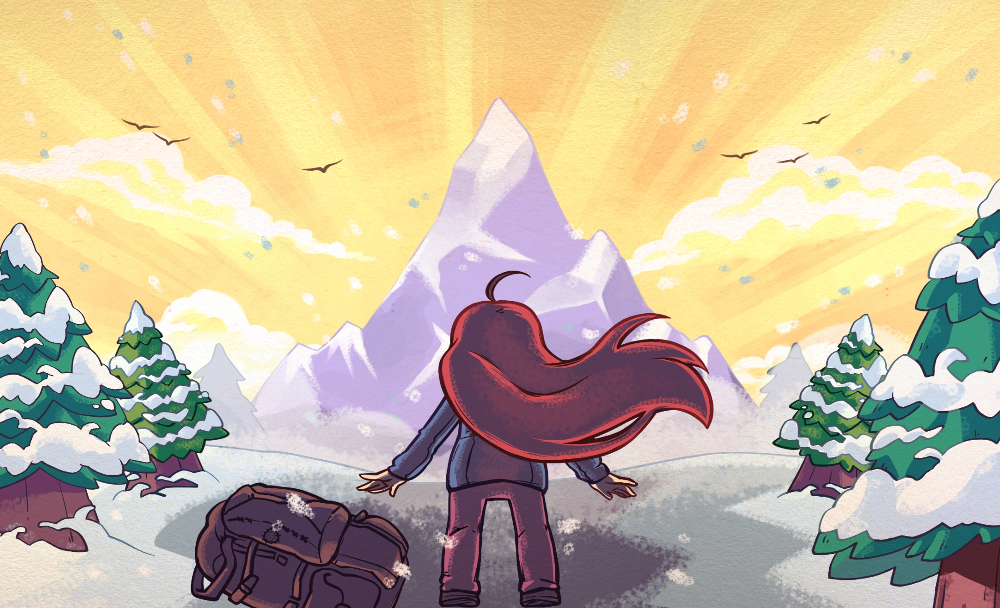
Tela de inicio do capítuloAparencia padrão do Cume
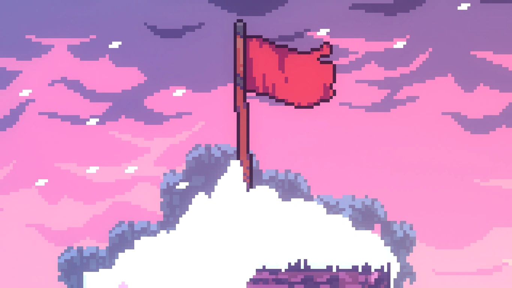
Bandeira do Cume
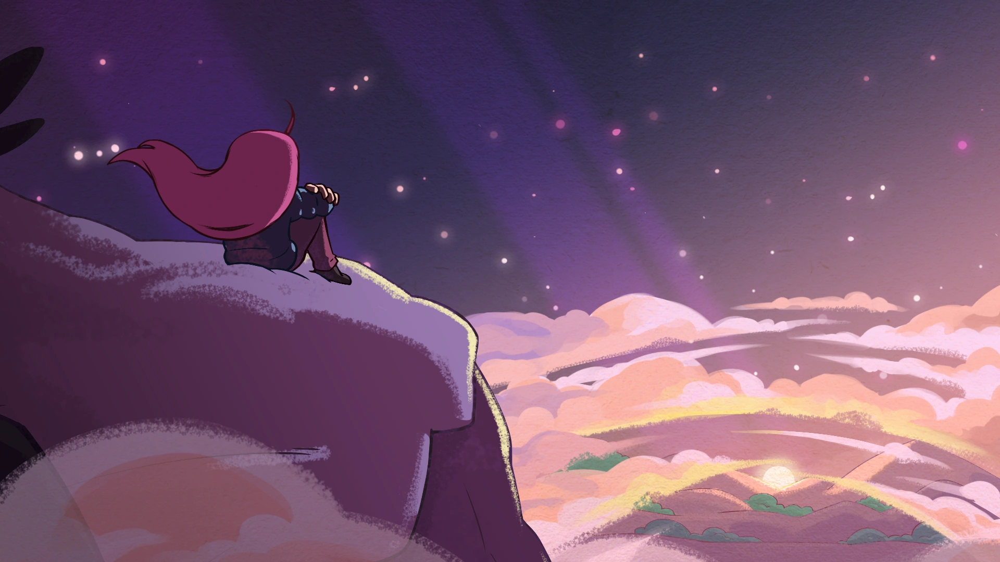
Tela de conclusão do capítulo
Epílogo
No epílogo temos Madeline, junta de Badeline, voltando à casa da vovó, lá encontramos todos os personagens que estiveram presente durante a jornada, encontramos a vovó, Theo e até mesmo o Sr. Oshiro, que as parabenizam por conseguir chegar ao cume da montanha Celeste. Para essa comemoração, Madeline decide cozinhar uma torta de morango, a reação dos personagens em relação à torta e a tela final, são referentes a quantos morangos o jogador pegou durante o jogo, se o jogador pegar poucos morangos a torta será quase inteiramente massa e os personagens não demonstrarão tanto gosto pela mesma, já se o jogador pegar vários morangos durante o jogo, a torta terá muito mais recheio e os personagens demonstrarão mais satisfação com a torta
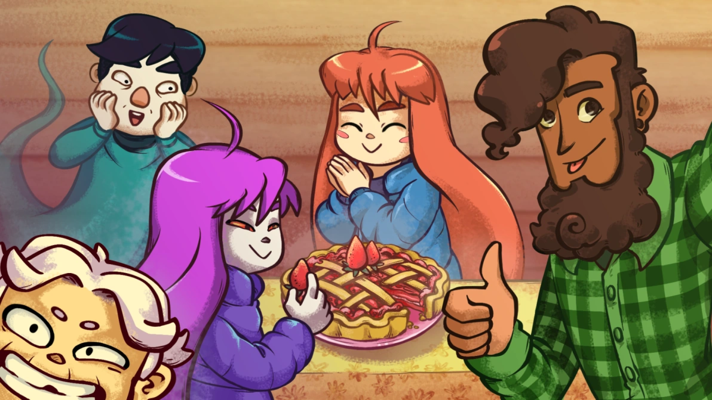
Uma das Telas finais (90 a 149 morangos coletados)
.webp)